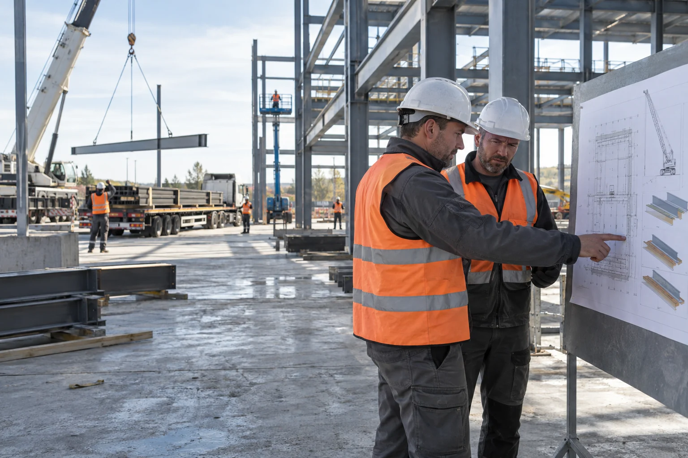
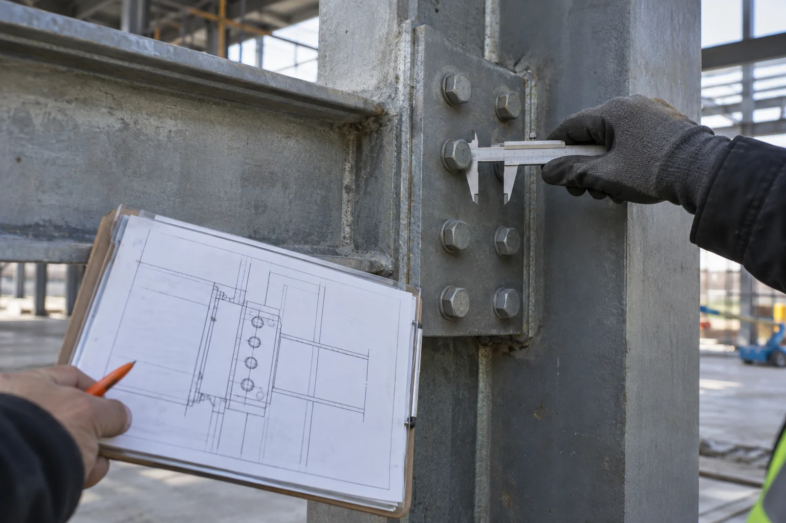

Работы по актуальному проекту
На площадке используется одна согласованная версия документации.
Выполняем строительно-монтажные работы по готовому или разработанному вместе с ПДП проекту. До выхода на площадку проверяем документацию и условия работ, затем связываем монтаж, поставки, контроль качества и исполнительные документы.

До начала работ проверяем проект, доступ на объект, готовность фронта и зоны ответственности. Затем собираем последовательность монтажа, поставок и допусков. Это особенно важно там, где несколько подрядчиков зависят друг от друга и задержка одной операции блокирует следующую.

Такой проект сначала сопоставляем с фактическим состоянием площадки. Вопросы по размерам, узлам, материалам и инженерным подключениям лучше снять до монтажа. После согласования изменений у исполнителей остаётся одна актуальная версия документации.
Акты, схемы, сведения о материалах и скрытых работах собираются по мере выполнения, а не перед самой сдачей объекта. Поэтому готовность этапа можно проверить тогда, когда результат ещё доступен для осмотра.
На площадке используется одна согласованная версия документации.

Поставки, допуски и смежные работы не конфликтуют между собой.

Результат проверяется на контрольных точках, а не только в конце проекта.

Документы собираются одновременно с фактическим выполнением.
Состав зависит от проекта: общестроительные работы, монтаж конструкций и инженерных систем, пусковые операции и оформление исполнительной документации в согласованном объёме.
Да. Перед началом сопоставляем документацию с фактическими условиями площадки, фиксируем вопросы и оставляем одну согласованную версию для работы.
Контрольные точки определяются до начала работ. Результат проверяется по проекту и требованиям к материалам, а замечания фиксируются и закрываются по мере выполнения.
Поставки, доступ на площадку, допуски и последовательность операций собираются в общий график, чтобы смежные работы не блокировали друг друга.
Заказчик получает согласованный комплект исполнительных схем, актов, сведений о материалах и подтверждений скрытых работ.
От состава работ, объёма монтажа, условий площадки, материалов, сроков и требуемого состава исполнительной документации.
Организуем работу проектировщиков и подрядчиков, следим за сроками, качеством и документами. Вы в любой момент понимаете, что происходит на объекте и что нужно для следующего этапа.